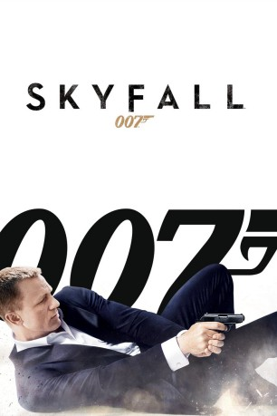

Auszeichnungen: 2 Oscars gewonnen für 3 Oscars nominiert 1 GoldenGlobes gewonnen 1 BAFTA-Awards gewonnen
 gesehen am 17.11.2015
gesehen am 17.11.2015Alternativ: Skyfall
Auszeichnungen: 2 Oscars gewonnen für 3 Oscars nominiert 1 GoldenGlobes gewonnen 1 BAFTA-Awards gewonnen gesehen am 17.11.2015
 
 IMDB-Wertung: 7.8 / 10
IMDB-Wertung: 7.8 / 10  Metascore:
Metascore: 
In James Bond 007 – Skyfall gerät James Bond im Geheimdienst Ihrer Majestät wieder einmal in die Schusslinie. Diesmal wird seine Loyalität auf die Probe gestellt, weil ein Geheimnis aus der Vergangenheit seine Auftraggeberin M in arge Bedrängnis bringt. Doch wie hoch wird der Preis sein, den Bond in Skyfall dafür zahlen muss, den MI6 gegen die neue Bedrohung zu verteidigen?
Jahr: 2012
Dauer: 143 Minuten
FSK: 12
Land: England Studio: Sony Pictures ReleasingTonspuren: DTS - , DTS - ,
Untertitel: Deutsch, Englisch, , , , ,
Auflösung: 1080p (1920×800) Größe: 15155 MB
Genre: Action, Abenteuer, Thriller
Regisseur:  Sam Mendes
Sam Mendes
Drehbuch: Neal Purvis, Robert Wade, John Logan, Ian Fleming
Soundtrack: Thomas Newman
Darsteller:
 Daniel Craig als James Bond
Daniel Craig als James Bond Judi Dench als M
Judi Dench als M Javier Bardem als Silva
Javier Bardem als Silva Ralph Fiennes als Gareth Mallory
Ralph Fiennes als Gareth Mallory Naomie Harris als Eve
Naomie Harris als Eve Bérénice Marlohe als Severine
Bérénice Marlohe als Severine Albert Finney als Kincade
Albert Finney als Kincade Ben Whishaw als Q
Ben Whishaw als Q Helen McCrory als Clair Dowar MP
Helen McCrory als Clair Dowar MP Nicholas Woodeson als Doctor Hall
Nicholas Woodeson als Doctor Hall Orion Lee als Shanghai Barman
Orion Lee als Shanghai Barman Roger Yuan als Severine's Bodyguard
Roger Yuan als Severine's Bodyguard Sid Man als Floating Dragon Assistant Floor Manager
Sid Man als Floating Dragon Assistant Floor Manager Jens Hultén als Silva's Henchman
Jens Hultén als Silva's Henchman Jo Cameron Brown als Wife at Tube Station
Jo Cameron Brown als Wife at Tube Station Tom Wu als Silva's Mercenary
Tom Wu als Silva's Mercenary Christopher Sciueref als Silva's Mercenary
Christopher Sciueref als Silva's Mercenary Daniel Adegboyega als Silva's Mercenary
Daniel Adegboyega als Silva's Mercenary Jozef Aoki als Security , uncredited
Jozef Aoki als Security , uncredited Mihai Arsene als Turkish Businessman , uncredited
Mihai Arsene als Turkish Businessman , uncredited Steve Barnett als Casino Player / Train Passenger , uncredited
Steve Barnett als Casino Player / Train Passenger , uncredited Greg Bennett als MI6 Agent , uncredited
Greg Bennett als MI6 Agent , uncredited Leon Corbin als Tube Commuter , uncredited
Leon Corbin als Tube Commuter , uncredited Graham Curry als Commuter , uncredited
Graham Curry als Commuter , uncredited Michael Dickins als Passenger , uncredited
Michael Dickins als Passenger , uncreditedDatei: X:\7+mehr(A-Z)\007 James Bond\James Bond 24 - Daniel Craig - Skyfall (2012, FSK12, 1920x800).mkv seit 15.02.2015
Festplatte: HD Collection-7+mehr(A-Z)+Person
 Es gibt insgesamt 28 Filme in der Gruppe '7+mehr(A-Z)\007 James Bond'
Es gibt insgesamt 28 Filme in der Gruppe '7+mehr(A-Z)\007 James Bond'